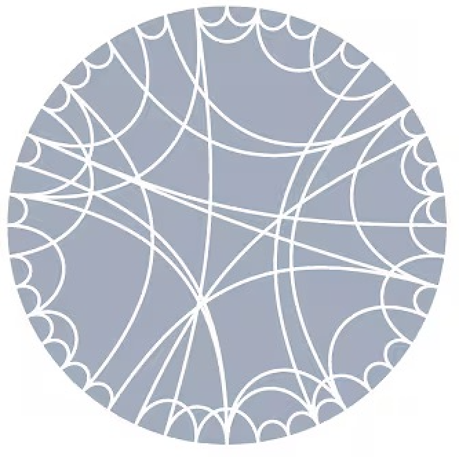

Willkommen, Bienvenue, Welcome!

Hi! I’m Yu Liu — currently a master’s student in Physics at EPFL, and a graduate of Tsinghua University. I’m interested in quantum gravity, especially the AdS/CFT correspondence. More recently, I’m also interested in CFTs and their applications in condensed matter physics.
Physics Pages
Here are some of my physics-related pages:
- Notes: A collection of my notes on various physics topics as well as lecture notes from courses I’ve taken in courses.
- Database: A database of research papers on various topics that I find interesting.
Beyond Physics
Outside the lab, I’m a Broadway musical enthusiast and I love skiing. Feel free to explore:
- Musicals blog: This is a blog where I share my reviews of various Musicals (while mostly broadway ones). Unfortunately, it’s currently only available in Chinese.
Contact Me
Email: yuliu21012858@gmail.com